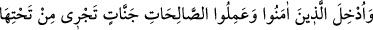
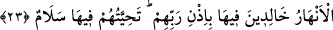

Buradaki zâlimler, şeytan ve ona tâbi olan insanlardır. Çünkü şeytan dâvetini bâtıla
yaparak yapılması gerekeni yapmamakla zulmetti. Tâbileri ise uyulmaması gereken bir
varlığa ittibâ ederek zulmettiler.
Âyette belirtilen hususların benzerlerinin anlatılması, dinleyenler için bir lütuf ve
kendilerini hesaba çekerek âkıbetlerini düşünmelerine vesile olacak bir îkazdır.
Kim kendi eksiğini görür ve tanırsa
Kemâle doğru on at çatlatarak koşar
Kim âhirini/sonunu görürse çok mes’uddur
Kim de ahırı görürse Hak’tan çok uzaktır
Cenab-ı Hak daha sonra mü’minlerin durumlarını, sonlarının ne olacağını şu âyetle
ifâde buyuruyor:
23. İman edip de iyi işler yapanlar, Rablerinin izniyle içinde ebedî kalacakları,
zemininden ırmaklar akan cennetlere sokulacaklardır. Orada (birbirleriyle)
karşılaştıkça söyledikleri “selam”dır.
“İman edip de iyi işler yapanlar,” yâni îmanla amel-i sâlihi birleştirenler
“Rablerinin izniyle” Allah’ın emriyle, tevfik ve hidâyetiyle “içinde ebedî kalacakları
zemininden ırmaklar akan” türlü türlü, rengârenk “cennetlere sokulacaklardır.”
Onları girdirenler ise meleklerdir.
Burada insanın kendi tabîatıyla başbaşa bırakılması durumunda, ne îmân edeceğine,
ne iyi işler yapacağına, ne de cennete girebileceğine işâret vardır. Âdem (a.s.)’ın
cennette ebedî kalamaması gibi, ilâhî yardım olmadığı takdirde hiç kimse de kalb
cennetinde bir an bile kalamaz. Nitekim et-Te’vîlâtü’n-Necmiyye’de böyle geçmektedir.
“Orada (birbirleriyle) karşılaştıkça söyledikleri “selâm”dır.”
“et-Tahıyye”, uzun bir ömre sâhip olması için birine duâ etmek anlamındadır. Yâni,
melekler onlara cennetlerde her türlü âfetten uzak kalmaları için duâ ederler. Ya da
mü’minler birbirlerine selâm temennîsinde bulunarak uzun ömür dilerler. “Selâm!” aynı
zamanda mü’minlerin dünyâdaki selâmlaşma ifâdeleridir.
Selâm ilk olarak babamız Âdem (a.s.)’dan sâdır olmuştur. Vehb b. Münebbih’in
bildirdiğine göre:
“Âdem (a.s.) Peygamber Efendimiz (s.a.)’in nûrunun parlaklığını görünce Cenab-ı
Hakk’a bunun ne olduğunu sordu.
Allah Teâlâ: